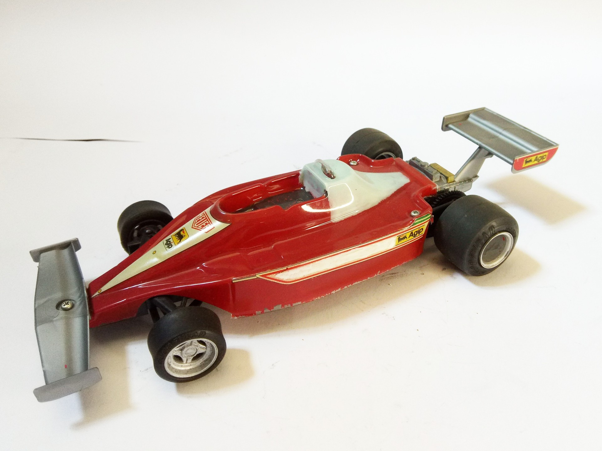

Auto e veicoli stradali · scale model archive
Ferrari 312 T3 F1
Ferrari 312 T3 F1 — Kit: IMAI, Scale: 1/20. 1978 F1 championship Rather basic kit #1/20 #IMAI #scalemodel

Photo gallery
English description
1978 F1 championship
Rather basic kit
#1/20 #IMAI #scalemodel
Descrizione italiana
1978 campionato di F1.
Rather basic kit.